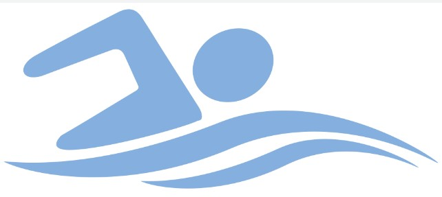
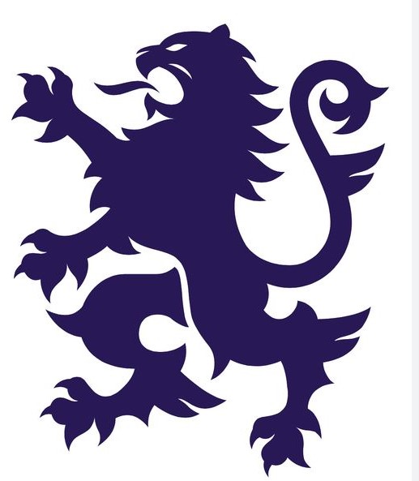

I am part of a program thats's in Piedmont called the Affinity Mentorship. Its a program where studentsbuilds connection and conversation that upholds and celebrates diverse identities all across our student body. Its a really diverse and inclusive program where kids feel seen and heard.
 I am also on the Piedmont High school swim team. So far I am liking the team and its a really fun sport that bonds all the members together.